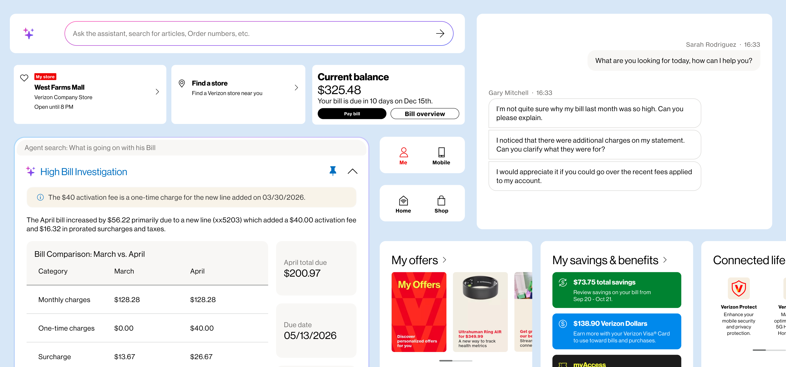

Case Study — Research & Product Design
Next Gen Contact Center Web App
Unifying two legacy platforms into one AI-orchestrated desktop for 35,000+ support representatives.

01 — Overview
A large-scale, ongoing modernization program
My role
- Shaped research goals and discussion guides for field studies
- Co-led synthesis of call-volume data and interviews into personas & journey maps
- Contributed to early-stage concept design for the unified experience
- Independently owned and shipped a modernization of the Service Change flow
What this case study covers
- The legacy problem, and a shipped fix I drove end-to-end
- The research behind a bigger unification vision
- Concepts, field validation, and where the program stood when I left
02 — The Problem
Reps stitched two disconnected systems together, live on every call
Two platforms, one job
One legacy tool for mobile & wireless, a completely separate one for home internet — with different logic, different UI, different data.
Mentally stitched together
Resolving a single customer issue meant tabbing between systems and reconciling what each one showed.
The cost showed up everywhere
Longer calls, inconsistent answers depending on which rep and which tool, and a steep learning curve for new hires.
03 — Proof of Execution
Service Change Modernization — a fix I helped ship
For two years I owned the troubleshooting & service-change area as ongoing BAU work. This was the first piece I helped take from legacy to modern — and it shipped.
Before
After
04 — Setting Direction
Leadership wanted flashy AI. The data pointed somewhere else.
I used this to make the case internally: fix the foundation before chasing new AI capabilities.
The unlock — We mapped the troubleshooting steps of both legacy platforms side by side and found the underlying logic was about 90% identical, despite completely different tools. That single finding justified unifying the two platforms rather than patching each one separately.
05 — Research Approach
An ongoing research practice, not a one-off study
Interactive step-mapping
Compared the two legacy platforms' troubleshooting flows step by step to find shared logic.
1:1 rep interviews
Recurring voice-of-rep interview program feeding directly into design decisions.
Call listening
5–15 recorded support calls reviewed every month across both platforms.
Quarterly field visits
In-person observation of reps on the floor, done in batches every quarter.
06 — Research Synthesis
Using AI to synthesize research at speed — then validating it by hand
Data ingestion
Call transcripts and interview recordings from months of recurring research.
AI-assisted processing
An AI tool clustered customer intents and surfaced emotional friction points at a scale manual review couldn't match.
Synthesized output
Data-backed personas, a day-in-the-life view, and a 6-stage journey map.
07 — Personas
Three personas built for a real 10 / 80 / 10 customer base
Jesse
Minimal Customer
One mobile account, one line, for one person.
Sidney
Average Customer
A combined mobile + home account, 3 lines for 2 people.
Alex
Maximal Customer
A combined mobile + home account, 8 lines for 6 people.
08 — Concept Exploration
Three concept directions, three different bets on AI vs. rep control
Canvas playground
- A single infinite canvas
- AI-generated contextual cards
- Highly customizable, but less guided
The agentic way
- AI proactively works the problem
- Transparent, step-by-step AI reasoning
- Powerful, but asks reps to trust AI more
Bi-modal framework
- Guided flow + a flexible workspace
- Progressive disclosure of detail
- AI as a team player, not the driver
09 — Grounding the Design
Hero scenarios kept concepts tied to real, high-frequency calls
Scenario 01
Bill High
A customer reports a spike in spam calls despite active filters — the rep walks them through reconfiguring call-filter settings live.
Scenario 02
Disconnect & Autopay
A customer needs to close one line, settle a final balance, and move a second account onto autopay — spanning two separate systems today.
Scenario 03
Payment
A customer negotiates a later payment date and needs autopay paused so it doesn't withdraw the full balance in the meantime.
10 — Bringing It to Life
Storyboarding the vision before a single screen was built
The trigger
A customer notices their bill jumped and reaches for the phone, frustrated.
AI greets & listens
An AI assistant greets the customer immediately and starts understanding the issue.
Seamless handover
The assistant hands off to a rep with full context already loaded — no re-explaining.
Rep resolves
The rep picks up mid-conversation and resolves the issue with the context already in view.
11 — Field Validation
Testing the concept with the reps who'd actually use it
Objective — Validate the unified desktop design against real rep feedback, and understand rep behaviors and expectations deeply enough to optimize the experience.
What we tested for
- Comprehension — do reps understand the new UI and terms?
- Sufficiency — is on-screen info enough to act, without switching tools?
- Utility — which parts actually help reps do their job?
- AI behavior — does AI content beside a live chat confuse or mislead?
- Multitasking — what do reps need to juggle several chats at once?
Methodology
- 9 reps tested — 5 on chat, 4 on voice
- 20–30 minute 1-on-1 sessions
- Rapid flash testing and scenario-based validation, rather than one long deep interview — to see more reps and cover more scenarios
12 — Key Findings
What reps told us, in their own words
Previously we needed to open the digital and check for all the things… now it has been added. So it is easy to check and we can easily convey to the customer.
One screen beats six tabs
If AI put the third statement that will go a different way only… it might mislead the communication. If it's getting collapsed, then it's the best thing.
Keep AI results out of the live chat
This one, "senior," means maybe like… five years — read as tenure, not a senior-citizen flag.
Vague labels get misread
Mostly we use it only to check the customer discounts… it's not useful when required upfront.
Surface details on demand, not upfront
13 — Recommendations
What I handed back to the design & platform teams
For chat
- Keep chat history & identifiers one click away when juggling multiple conversations
- Surface chat timing (wait time, total duration) reps were tracking manually
- Move AI-generated suggestions out of the live transcript into a separate panel
- Design for dual-monitor workflows — reps strongly preferred spreading tools across two screens
For voice
- Replace ambiguous labels (like a bare "senior" tag) with explicit, unambiguous language
- Give reps one-click access to line-level billing detail during live calls
- Show network/outage status inline instead of requiring a separate lookup
- Surface customer insights & relevant offers proactively, not buried in a tab
14 — The Bigger Vision
A unified, AI-orchestrated desktop for every rep
A single system that centralizes every customer interaction, so reps spend less time hunting for information and more time helping the customer in front of them.
AHT target breakdown: ~15s from core AI assistance · ~5s from a dynamic, guided UI · ~2s from raw performance improvements.
15 — Honest Status
Where the program stood when I left
~2 yrs, BAU
Owned troubleshooting & service-change work; shipped the Service Change Modernization redesign.
Early prior year
The broader unification vision kicked off, aiming to merge both legacy platforms into one.
This year
A platform engineering team took the vision forward with dedicated funding and a formal build.
Pilot pushed
The first pilot launch, originally targeted for last summer, was pushed past that date.
My last day was the end of July, before the pilot launched. Everything past the Service Change work reflects research, concepts, and design contributions, not delivered production results.
16 — Reflection
What this project reinforced for me
01
Data beats instinct
The loudest opinion in the room isn't always the right priority — call-volume data settled a real disagreement about where to start.
02
AI needs a human check
AI-assisted synthesis is genuinely fast, but every output still needed validation against real interviews and field visits before I trusted it.
03
Simplifying is its own kind of design
Untangling two years of legacy complexity into one clear flow was as hard, and as valuable, as inventing something new.
Thank you
Happy to go deeper on the research, the design decisions, or the tooling behind any of this.
Reach out and I'll walk you through it.
Get in touch